24 Nuclear?
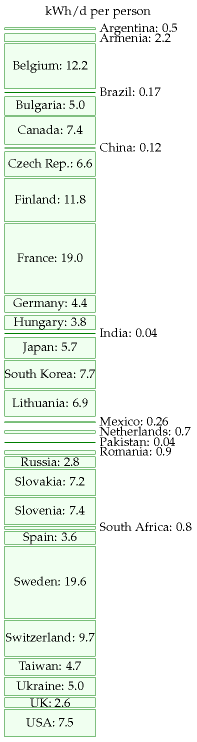
Figure 24.1. Electricity generated per capita from nuclear fission in 2007, in kWh per day per person, in each of the countries with nuclear power. 1
We made the mistake of lumping nuclear energy in with nuclear weapons, as if all things nuclear were evil. I think that’s as big a mistake as if you lumped nuclear medicine in with nuclear weapons.
Patrick Moore, former Director of Greenpeace International
Nuclear power comes in two flavours. Nuclear fission is the flavour that we know how to use in power stations; fission uses uranium, an exceptionally heavy element, as fuel. Nuclear fusion is the flavour that we don’t yet know how to implement in power stations; fusion would use light elements, especially hydrogen, as its fuel. Fission reactions split up heavy nuclei into medium-sized nuclei, releasing energy. Fusion reactions fuse light nuclei into medium-sized nuclei, releasing energy.
Both forms of nuclear power, fission and fusion, have an important property: the nuclear energy available per atom is roughly one million times bigger than the chemical energy per atom of typical fuels. This means that the amounts of fuel and waste that must be dealt with at a nuclear reactor can be up to one million times smaller than the amounts of fuel and waste at an equivalent fossil-fuel power station.
Let’s try to personalize these ideas. The mass of the fossil fuels consumed by “the average British person” is about 16 kg per day (4 kg of coal, 4 kg of oil, and 8 kg of gas). That means that every single day, an amount of fossil fuels with the same weight as 28 pints of milk is extracted from a hole in the ground, transported, processed, and burned somewhere on your behalf. The average Brit’s fossil fuel habit creates 11 tons per year of waste carbon dioxide; that’s 30 kg per day. In the previous chapter we raised the idea of capturing waste carbon dioxide, compressing it into solid or liquid form, and transporting it somewhere for disposal. Imagine that one person was responsible for capturing and dealing with all their own carbon dioxide waste. 30 kg per day of carbon dioxide is a substantial rucksack-full every day – the same weight as 53 pints of milk!
In contrast, the amount of natural uranium required to provide the same amount of energy as 16 kg of fossil fuels, in a standard fission reactor, is 2 grams; and the resulting waste weighs one quarter of a gram. (This 2 g of uranium is not as small as one millionth of 16 kg per day, by the way, because today’s reactors burn up less than 1% of the uranium.) To deliver 2 grams of uranium per day, the miners at the uranium mine would have to deal with perhaps 200 g of ore per day.
So the material streams flowing into and out of nuclear reactors are small, relative to fossil-fuel streams. “Small is beautiful,” but the fact that the nuclear waste stream is small doesn’t mean that it’s not a problem; it’s just a “beautifully small” problem.
“Sustainable” power from nuclear fission
Figure 24.1 shows how much electricity was generated globally by nuclear power in 2007, broken down by country.
| Million tonnes of uranium | MacKay, 2008 | 2026 edition |
|---|---|---|
| Australia | 1.14 | 1.67 |
| Kazakhstan | 0.82 | 0.81 |
| Canada | 0.44 | 0.58 |
| Namibia | 0.28 | 0.50 |
| Russian Federation | 0.17 | 0.48 |
| Niger | — | 0.34 |
| South Africa | 0.34 | 0.32 |
| China | — | 0.27 |
| Brazil | 0.28 | 0.17 |
| Mongolia | — | 0.14 |
| Ukraine | — | 0.11 |
| USA | 0.34 | 0.07 |
| Uzbekistan | 0.12 | — |
| World total, in the ground | 4.7 | 5.93 |
| Phosphate deposits | 22 | 22 |
| Seawater | 4500 | 4500 |
Table 24.2. Known recoverable resources of uranium, as MacKay gave them and as they stand in the 2026 revision. Both columns are “identified resources” — reasonably assured plus inferred — recoverable at under $130 per kilogram of uranium; MacKay’s are as of 1 January 2005, the current column as of 1 January 2023. Countries shown with a dash were not listed separately in that column’s source. Phosphate and seawater figures are geological estimates of a different kind and have not been restated.2
Added in the 2026 revision. Two things in that comparison are worth stating, because they run opposite ways.
The world total went up, not down. Identified resources rose from 4.7 to 5.93 million tonnes, about 26%, over eighteen years in which the world also consumed something over a million tonnes. Exploration more than replaced what was burned. This is the same pattern chapter 23 finds for coal in reverse: there, the resource estimate was revised down by a third while consumption rose slowly. Resource estimates are not measurements of what is in the ground. They are measurements of how hard anyone has recently looked, at a stated price.
The American entry fell by four-fifths, from 0.34 to 0.07 million tonnes, and almost none of that is uranium being mined. It is reporting: the United States has largely stopped submitting the resource categories the Red Book asks for, and what remains understates what is there. It is a useful warning about this kind of table. A national figure that collapses is more often a change in the reporting than a change in the rock, and the same caution applies to the coal reserves in chapter 23 and to every resource estimate in this book.
Neither correction touches MacKay’s argument. His question is whether fission could support humanity for generations, and he answers it with the world total, the seawater figure and the difference between once-through and breeder reactors. Those are unchanged. The resource was never the binding constraint, and eighteen years of data have made that more obvious rather than less.
Uranium from seawater, and why the price barely matters
MacKay’s seawater figure — 4.5 billion tonnes, a thousand times everything in the ground — carries the weight of his sustainability argument, and the obvious objection is that nobody has ever extracted uranium from seawater at scale. That objection is correct and it matters less than it sounds, for a reason this chapter has already established.
Nuclear’s fuel is a rounding error in its cost. A one-gigawatt light-water reactor consumes about 180 tonnes of uranium a year and, at 90% availability, generates about 7.9 TWh. Multiply out and the raw uranium is worth roughly $0.023 per MWh for every dollar per kilogram it costs. So:
| Uranium price | Raw uranium in the electricity |
|---|---|
| $225/kgU — spot, August 2026 | $5/MWh |
| $300/kgU | $7/MWh |
| $500/kgU | $11/MWh |
| $800/kgU | $18/MWh |
| $1200/kgU | $27/MWh |
Published estimates of what seawater extraction would cost span the middle and upper parts of that range, depending almost entirely on how many times the adsorbent can be reused. So moving the entire world fleet from mined uranium to seawater uranium would add something like $10 to $20 per MWh.
Now set that beside figure 24.18. The same reactor moves from about €72/MWh to about €175/MWh depending on who lends the money — a swing of more than €100. The whole distance from today’s uranium price to the most pessimistic seawater estimate is worth about a fifth of what the discount rate is worth. Fuel is not where nuclear’s cost lives, and this is the strongest single defence of MacKay’s sustainability argument: even if his backstop resource turns out five times more expensive than anyone hopes, the electricity is still recognisably the same price.3
What that does not settle is whether it can be built. Dungan and colleagues review the engineering honestly, and the obstacles are physical rather than economic. The leading system is a braided polyethylene adsorbent carrying amidoxime groups, and a cost analysis attributes 88% of the total to just two items — mooring and collection, and manufacturing the adsorbent. The adsorbent degrades with each cycle, fouls biologically, and has to be recovered from open water. Uranium is present at 3.3 parts per billion, so the volumes are enormous: the Japan Atomic Energy Agency’s proposal for an initial deployment covers 1031 square kilometres of seabed and over 100 000 tonnes of adsorbent. A farm that size is a legal object as well as an engineering one, since the Law of the Sea governs exploitation of marine resources and its marine-protection provisions were not written with this in mind.4
The chemistry has moved a long way since that review, and it has moved in the wrong direction to matter. Two families of material have appeared since 2017 and both beat the braid handsomely on the laboratory bench.
| Route | Capacity from real seawater | Scale demonstrated |
|---|---|---|
| Amidoxime braid — the baseline | >3 mg/g in 56 days | 5–10 g, at sea, in flowing water |
| Electrochemical, porous aromatic framework electrode | 12.6 mg/g in 24 days | laboratory |
| Electrocatalytic, indium–nitrogen–carbon | 6.35 mg/g in 24 hours | laboratory |
| Covalent organic framework, hydroxy-rich | 23.7 mg/g in 7 days | laboratory |
| Covalent organic framework nanowires, under light | 34.5 mg/g in 42 days | laboratory |
Those are real gains — roughly an order of magnitude in capacity and considerably more in speed. They also improve the thing that is not the bottleneck. The cost analysis quoted above puts 88% of the total in mooring and collection, and in manufacturing the adsorbent. Better chemistry reduces the mass of adsorbent needed, which helps the second of those. It does nothing about the first, which is the business of putting a structure the size of a small county into open ocean and getting it back again.
And the electrochemical routes make the dominant cost worse rather than better. The braid’s virtue is that it is passive: you moor it, the current runs through it, and you collect it. An electrode needs electrical contact, a counter-electrode, a cell, and a circuit — which means either powering a mooring field at sea or pumping seawater to a plant on shore. Both attack the largest cost item from the wrong side. It is not an argument against the chemistry; it is an argument that the chemistry was never where the difficulty was.
The energy cost of the electrochemical route, by contrast, is a non-objection, and the arithmetic is worth doing because the instinct runs the other way. A gigawatt-year of electricity is 8.76 billion kWh, from about 180 tonnes of uranium — so each kilogram of natural uranium is worth roughly 49 000 kWh of electricity in a once-through reactor. Extraction could spend a thousand kilowatt-hours per kilogram and still return fifty times over. Whatever stops seawater uranium, it is not the energy budget.
The variable nobody quotes is reuse, and it is the one the field data actually constrains. Elution with potassium bicarbonate recovers essentially all of the braid’s capacity the first time; by the fourth cycle it is down to 28% of the original, because the amidoxime groups convert to carboxylates during long seawater exposure. Since adsorbent manufacture is one of the two dominant costs, the number of usable cycles matters as much as the capacity per cycle — and not one of the new materials has a comparable durability figure measured in real seawater over months.5
So the honest summary is the one that keeps recurring in this chapter. Seawater uranium works as a price ceiling rather than as a supply. Its function is to bound how expensive uranium can ever get, because if the price rose far enough this becomes worth doing — and the arithmetic above shows that a bounded uranium price bounds almost nothing about the cost of nuclear electricity anyway. The resource question was answered before it was asked. The construction and financing questions were not.
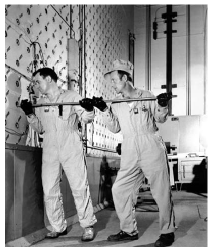
Figure 24.3. Workers push uranium slugs into the X-10 Graphite Reactor.
Could nuclear power be “sustainable”? Leaving aside for a moment the usual questions about safety and waste-disposal, a key question is whether humanity could live for generations on fission. How great are the world wide supplies of uranium, and other fissionable fuels? Do we have only a few decades’ worth of uranium, or do we have enough for millennia?
To estimate a “sustainable” power from uranium, I took the total recoverable uranium in the ground and in seawater, divided it fairly between 6 billion humans, and asked “how fast can we use this if it has to last 1000 years?”
Almost all the recoverable uranium is in the oceans, not in the ground: seawater contains 3.3 mg of uranium per m3 of water, which adds up to 4.5 billion tons worldwide. I called the uranium in the ocean “recoverable” but this is a bit inaccurate – most ocean waters are quite inaccessible, and the ocean conveyor belt rolls round only once every 1000 years or so; and no-one has yet demonstrated uranium-extraction from seawater on an in dustrial scale. So we’ll make separate estimates for two cases: first using only mined uranium, and second using ocean uranium too.
The uranium ore in the ground that’s extractable at prices below $130 per kg of uranium is about one thousandth of this. If prices went above $130 per kg, phosphate deposits that contain uranium at low concentrations would become economic to mine. Recovery of uranium from phosphates is perfectly possible, and was done in America and Belgium before 1998. For the estimate of mined uranium, I’ll add both the conventional uranium ore and the phosphates, to give a total resource of 27 million tons of uranium (table 24.2).
We’ll consider two ways to use uranium in a reactor: (a) the widely-used once-through method gets energy mainly from the 235U (which makes up just 0.7% of uranium), and discards the remaining 238U; (b) fast breeder reactors, which are more expensive to build, convert the 238U to fissionable plutonium-239 and obtain roughly 60 times as much energy from the uranium. 6
Once-through reactors, using uranium from the ground
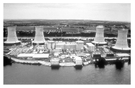
Figure 24.4. Three Mile Island nuclear power plant.
A once-through one-gigawatt nuclear power station uses 162 tons per year of uranium. 7 So the known mineable resources of uranium, shared between 6 billion people, would last for 1000 years if we produced nuclear power at a rate of 0.55 kWh per day per person. This sustainable rate is the output of just 136 nuclear power stations, and is half of today’s nuclear power production. It’s very possible this is an underestimate of uranium’s potential, since, as there is not yet a uranium shortage, there is no incentive for exploration and little uranium exploration has been undertaken since the 1980s; so maybe more mineable uranium will be discovered. Indeed, one paper published in 1980 estimated that the low-grade uranium resource is more than 1000 times greater than the 27 million tons we just assumed. 8
Could our current once-through use of mined uranium be sustainable? It’s hard to say, since there is such uncertainty about the result of future exploration. Certainly at today’s rate of consumption, once-through reactors could keep going for hundreds of years. But if we wanted to crank up nuclear power 40-fold worldwide, in order to get off fossil fuels and to allow standards of living to rise, we might worry that once-through reactors are not a sustainable technology.
Fast breeder reactors, using uranium from the ground
(Figure omitted from this edition: third-party rights.)
Figure 24.5. Dounreay Nuclear Power Development Establishment, whose primary purpose was the development of fast breeder reactor technology. Photo by John Mullen.
Uranium can be used 60 times more efficiently in fast breeder reactors, which burn up all the uranium – both the 238U and the 235U (in contrast to the once-through reactors, which burn mainly 235U). As long as we don’t chuck away the spent fuel that is spat out by once-through reactors, this source of depleted uranium could be used too, so uranium that is put in once-through reactors need not be wasted. If we used all the mineable uranium (plus the depleted uranium stockpiles) in 60-times-more-efficient fast breeder reactors, the power would be 33 kWh per day per person. Attitudes to fast breeder reactors range from “this is a dangerous failed experimental technology whereof one should not speak” to “we can and should start building breeder reactors right away.” I am not competent to comment on the risks of breeder technology, and I don’t want to mix ethical assertions with factual assertions. My aim is just to help understand the numbers. The one ethical position I wish to push is “we should have a plan that adds up.”
Once-through, using uranium from the oceans
The oceans’ uranium, if completely extracted and used in once-through reactors, corresponds to a total energy of
\[ \begin{matrix} \frac{\text{4.5\ billion\ tons\ per\ planet}}{\text{162\ tons\ uranium\ per\ GW-year}} \\ {\text{\quad\quad\quad} = \text{~28\ million\ GW-years\ per\ planet.}} \\ \end{matrix} \]
How fast could uranium be extracted from the oceans? The oceans circulate slowly: half of the water is in the Pacific Ocean, and deep Pacific waters circulate to the surface on the great ocean conveyor only every 1600 years. Let’s imagine that 10% of the uranium is extracted over such a 1600-year period. That’s an extraction rate of 280 000 tons per year. In once-through reactors, this would deliver power at a rate of
2.8 million GW-years / 1600 years = 1750 GW,
which, shared between 6 billion people, is 7 kWh per day per person. (There’s currently 369 GW of nuclear reactors, so this figure corresponds to a 4-fold increase in nuclear power over today’s levels.) I conclude that ocean extraction of uranium would turn today’s once-through reactors into a “sustainable” option – assuming that the uranium reactors can cover the energy cost of the ocean extraction process.
Fast breeder reactors, using uranium from the oceans
If fast reactors are 60 times more efficient, the same extraction of ocean uranium could deliver 420 kWh per day per person. At last, a sustainable figure that beats current consumption! – but only with the joint help of two technologies that are respectively scarcely-developed and unfashionable: ocean extraction of uranium, and fast breeder reactors.
Using uranium from rivers
The uranium in the oceans is being topped up by rivers, which deliver uranium at a rate of 32 000 tons per year. If 10% of this influx were captured, it would provide enough fuel for 20 GW of once-through reactors, or 1200 GW of fast breeder reactors. The fast breeder reactors would deliver 5 kWh per day per person.
All these numbers are summarized in figure 24.6.
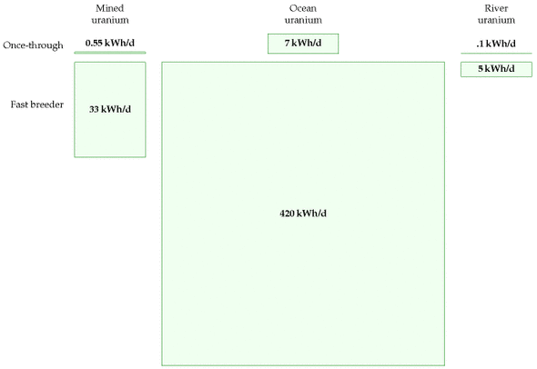
Figure 24.6. “Sustainable” power from uranium. For comparison, world nuclear power production today is 1.2 kWh/d per person. British nuclear power production used to be 4 kWh/d per person and is declining.
What about costs?
As usual in this book, my main calculations have paid little attention to economics. However, since the potential contribution of ocean-uranium-based power is one of the biggest in our “sustainable” production list, it seems appropriate to discuss whether this uranium-power figure is at all economically plausible.
Japanese researchers have found a technique for extracting uranium from seawater 9 at a cost of $100–300 per kilogram of uranium, in comparison with a current cost of about $20/kg for uranium from ore. Because uranium contains so much more energy per ton than traditional fuels, this 5-fold or 15-fold increase in the cost of uranium would have little effect on the cost of nuclear power: nuclear power’s price is dominated by the cost of power-station construction and decommissioning, not by the cost of the fuel. Even a price of $300/kg would increase the cost of nuclear energy by only about 0.3 p per kWh. The expense of uranium extraction could be reduced by combining it with another use of seawater – for example, power-station cooling. 10
We’re not home yet: does the Japanese technique scale up? What is the energy cost of processing all the seawater? In the Japanese experiment, three cages full of adsorbent uranium-attracting material weighing 350 kg collected “more than 1 kg of yellow cake in 240 days;” this figure corresponds to about 1.6 kg per year. The cages had a cross-sectional area of 48 m2. To power a once-through 1 GW nuclear power station, we need 160 000 kg per year, which is a production rate 100 000 times greater than the Japanese experiment’s. If we simply scaled up the Japanese technique, which accumulated uranium passively from the sea, a power of 1 GW would thus need cages having a collecting area of 4.8 km2 and containing a weight of 350 000 tons of adsorbent material – more than the weight of the steel in the reactor itself. To put these large numbers in human terms, if uranium were delivering, say, 22 kWh per day per person, each 1 GW reactor would be shared between 1 million people, each of whom needs 0.16 kg of uranium per year. So each person would require one tenth of the Japanese experimental facility, with a weight of 35 kg per person, and an area of 5 m2 per person. The proposal that such uranium-extraction facilities should be created is thus similar in scale to proposals such as “every person should have 10 m2 of solar panels” and “every person should have a one-ton car and a dedicated parking place for it.” A large investment, yes, but not absurdly off scale. And that was the calculation for once-through reactors. For fast breeder reactors, 60 times less uranium is required, so the mass per person of the uranium collector would be 0.5 kg.
Thorium
| Country | Reserves (1000 tons) |
|---|---|
| Turkey | 380 |
| Australia | 300 |
| India | 290 |
| Norway | 170 |
| USA | 160 |
| Canada | 100 |
| South Africa | 35 |
| Brazil | 16 |
| Other countries | 95 |
| World total | 1580 |
Table 24.7. Known world thorium resources in monazite (economically extractable). 11
Thorium is a radioactive element similar to uranium. Formerly used to make gas mantles, it is about three times as abundant in the earth’s crust as uranium. Soil commonly contains around 6 parts per million of thorium, and some minerals contain 12% thorium oxide. Seawater contains little thorium, because thorium oxide is insoluble. Thorium can be completely burned up in simple reactors (in contrast to standard uranium reactors which use only about 1% of natural uranium). Thorium is used in nuclear reactors in India. If uranium ore runs low, thorium will probably become the dominant nuclear fuel.
Thorium reactors deliver 3.6 billion kWh of heat per ton of thorium, 12 which implies that a 1 GW reactor requires about 6 tons of thorium per year, assuming its generators are 40% efficient. Worldwide thorium resources are estimated to total about 6 million tons, four times more than the known reserves shown in table 24.7. As with the uranium resources, it seems plausible that these thorium resources are an underestimate, since thorium prospecting is not highly valued today. If we assume, as with uranium, that these resources are used up over 1000 years and shared equally among 6 billion people, we find that the “sustainable” power thus generated is 4 kWh/d per person.
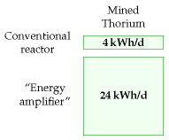
Figure 24.8. Thorium options.
(Figure omitted from this edition: third-party rights.)
Figure 24.9. Sizewell’s power stations. Sizewell A, in the foreground, had a capacity of 420 MW, and was shut down at the end of 2006. Sizewell B, behind, has a capacity of 1.2 GW. Photo by William Connolley.
An alternative nuclear reactor for thorium, the “energy amplifier” or “accelerator-driven system” proposed by Nobel laureate Carlo Rubbia and his colleagues 13 would, they estimated, convert 6 million tons of thorium to 15 000 TWy of energy, or 60 kWh/d per person over 1000 years. Assuming conversion to electricity at 40% efficiency, this would deliver 24 kWh/d per person for 1000 years. And the waste from the energy amplifier would be much less radioactive too. They argue that, in due course, many times more thorium would be economically extractable than the current 6 million tons. If their suggestion – 300 times more – is correct, then thorium and the energy amplifier could offer 120 kWh/d per person for 60 000 years.
Land use
Let’s imagine that Britain decides it is serious about getting off fossil fuels, and creates a lot of new nuclear reactors, even though this may not be “sustainable.” If we build enough reactors to make possible a significant decarbonization of transport and heating, can we fit the required nuclear reactors into Britain? The number we need to know is the power per unit area of nuclear power stations, which is about 1000W/m2 (figure 24.10). Let’s imagine generating 22 kWh per day per person of nuclear power – equivalent to 55 GW (roughly the same as France’s nuclear power), which could be delivered by 55 nuclear power stations, each occupying one square kilometre. That’s about 0.02% of the area of the country. Wind farms delivering the same average power would require 500 times as much land: 10% of the country. If the nuclear power stations were placed in pairs around the coast (length about 3000 km, at 5 km resolution), then there’d be two every 100 km. Thus while the area required is modest, the fraction of coastline gobbled by these power stations would be about 2% (2 kilometres in every 100).
(Figure omitted from this edition: third-party rights.)
Figure 24.10. Sizewell occupies less than 1 km2. The blue grid’s spacing is 1 km. © Crown copyright; Ordnance Survey.
Economics of cleanup
What’s the cost of cleaning up nuclear power sites? The nuclear decommissioning authority has an annual budget of £2 billion for the next 25 years. 14 The nuclear industry sold everyone in the UK 4 kWh/d for about 25 years, 15 so the nuclear decommissioning authority’s cost is 2.3 p/kWh. That’s a hefty subsidy – though not, it must be said, as hefty as the subsidy currently given to offshore wind (7 p/kWh).
Erratum: “The nuclear decommissioning authority has an annual budget of 2 billion.” In fact this is to clean up not only the civilian nuclear power stations but also the military nuclear-bomb-making facilities at Sellafield. The lion’s share of the money is thus cleaning up military mess, not civilian-power mess. This means I have overestimated the cost per kWh of cleaning up old civilian nuclear power.
Safety
The safety of nuclear operations in Britain remains a concern. The THORP reprocessing facility at Sellafield, built in 1994 at a cost of £1.8 billion, had a growing leak from a broken pipe from August 2004 to April 2005. Over eight months, the leak let 85 000 litres of uranium-rich fluid flow into a sump which was equipped with safety systems that were designed to detect immediately any leak of as little as 15 litres. But the leak went undetected because the operators hadn’t completed the checks that ensured the safety systems were working; and the operators were in the habit of ignoring safety alarms anyway.
The safety system came with belt and braces. Independent of the failed safety alarms, routine safety-measurements of fluids in the sump should have detected the abnormal presence of uranium within one month of the start of the leak; but the operators often didn’t bother taking these routine measurements, because they felt too busy; and when they did take measurements that detected the abnormal presence of uranium in the sump (on 28 August 2004, 26 November 2004, and 24 February 2005), no action was taken.
By April 2005, 22 tons of uranium had leaked, but still none of the leak-detection systems detected the leak. The leak was finally detected by accountancy, when the bean-counters noticed that they were getting 10% less uranium out than their clients claimed they’d put in! Thank goodness this private company had a profit motive, hey? The criticism from the Chief Inspector of Nuclear Installations was withering: “The Plant was operated in a culture that seemed to allow instruments to operate in alarm mode rather than questioning the alarm and rectifying the relevant fault.” 16
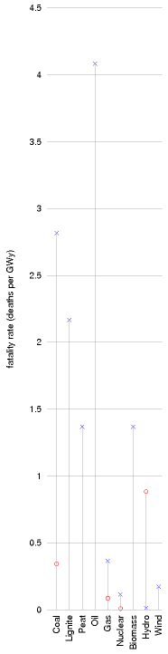
Figure 24.11. Death rates of electricity generation technologies. x: European Union estimates by the ExternE project. O: Paul Scherrer Institute.
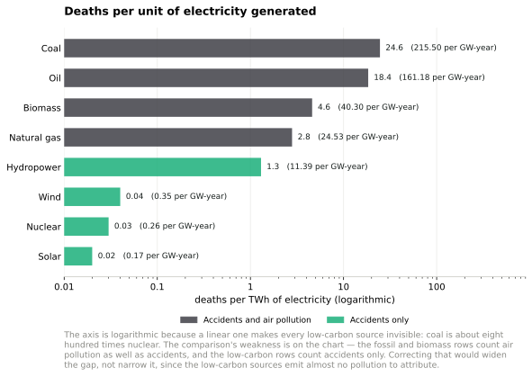
Figure 24.11b. Deaths per unit of electricity generated, on current figures. Added in the 2026 revision. MacKay’s figure 24.11 used ExternE and Paul Scherrer estimates that predate this book; the ordering has not changed, but the sources have improved and the numbers can now be given in both his unit and the one the literature uses. Coal is about eight hundred times nuclear.17
Figure 24.11c. The same comparison, live from Our World in Data, which maintains the underlying series. The figure above is drawn from it and will not update; this one will.
And the accident that dominates the argument is worth quantifying too, because almost every public discussion of nuclear safety is really a discussion about Chernobyl. The confirmed toll is fewer than 100: two killed in the explosion, twenty-eight from acute radiation syndrome within weeks, and fifteen confirmed deaths from the thyroid cancers caused by contaminated milk. Projections of eventual cancer deaths span a wide range and depend on assumptions about very low doses that cannot be tested; Our World in Data’s own best approximation is 300 to 500. For Fukushima, the confirmed radiation toll is one, and the toll from the evacuation is about 2313 — a ratio that inverts the popular understanding of the event.18
If we let private companies build new reactors, how can we ensure that higher safety standards are adhered to? I don’t know.
At the same time, we must not let ourselves be swept off our feet in horror at the danger of nuclear power. Nuclear power is not infinitely dangerous. It’s just dangerous, 19 much as coal mines, petrol repositories, fossil-fuel burning and wind turbines are dangerous. Even if we have no guarantee against nuclear accidents in the future, I think the right way to assess nuclear is to compare it objectively with other sources of power. Coal power stations, for example, expose the public to nuclear radiation, because coal ash typically contains uranium. Indeed, according to a paper published in the journal Science, people in America living near coal-fired power stations are exposed to higher radiation doses than those living near nuclear power plants. 20
When quantifying the public risks of different power sources, we need a new unit. I’ll go with “deaths per GWy (gigawatt-year).” Let me try to convey what it would mean if a power source had a death rate of 1 death per GWy. One gigawatt-year is the energy produced by a 1 GW power station, if it operates flat-out for one year. Britain’s electricity consumption is roughly 45 GW, or, if you like, 45 gigawatt-years per year. So if we got our electricity from sources with a death rate of 1 death per GWy, that would mean the British electricity supply system was killing 45 people per year. For comparison, 3000 people die per year on Britain’s roads. So, if you are not campaigning for the abolition of roads, you may deduce that “1 death per GWy” is a death rate that, while sad, you might be content to live with. Obviously, 0.1 deaths per GWy would be preferable, but it takes only a moment’s reflection to realize that, sadly, fossil-fuel energy production must have a cost greater than 0.1 deaths per GWy – just think of disasters on oil rigs; helicopters lost at sea; pipeline fires; refinery explosions; and coal mine accidents: there are tens of fossil-chain fatalities per year in Britain.
So, let’s discuss the actual death rates of a range of electricity sources. The death rates vary a lot from country to country. In China, for example, the death rate in coal mines, per ton of coal delivered, is 50 times that of most nations. Figure 24.11 shows numbers from studies by the Paul Scherrer Institute and by a European Union project called ExternE, which made comprehensive estimates of all the impacts of energy production. According to the EU figures, coal, lignite, and oil have the highest death rates, followed by peat and biomass-power, with death rates above 1 per GWy. Nuclear and wind are the best, with death rates below 0.2 per GWy. 21 Hydroelectricity is the best of all according to the EU study, but comes out worst in the Paul Scherrer Institute’s study, because the latter surveyed a different set of countries.
Inherently safe nuclear power
Spurred on by worries about nuclear accidents, engineers have devised many new reactors with improved safety features. The GT-MHR power plant, for example, is claimed to be inherently safe; and, moreover it has a higher efficiency of conversion of heat to electricity than conventional nuclear plants [gt-mhr.ga.com].
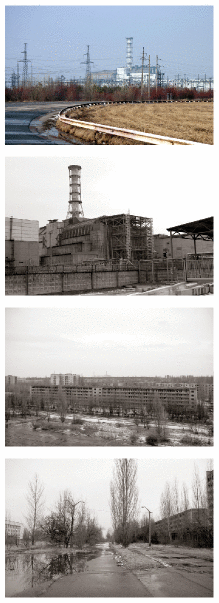
Figure 24.12. Chernobyl power plant (top), and the abandoned town of Prypiat, which used to serve it (bottom). Photos by Nik Stanbridge.
Waste: somebody finally built somewhere to put it
A section added in the 2026 revision. The standard objection to nuclear power is not cost or safety but waste, and the standard form of the objection is that nobody knows what to do with it. For the whole of this book’s life that was true in the only sense that counts: every country with a nuclear programme had a design for a deep geological repository, and no country had one.
That changed in Finland. Onkalo, at Olkiluoto, is the first deep geological repository for spent nuclear fuel anywhere. Posiva received a construction licence in 2015 — the first in the world — applied for an operating licence in 2021, and ran the commissioning trial from late 2024, encapsulating and emplacing canisters filled with non-radioactive test material about 430 metres down. Disposal of real spent fuel is planned to begin in 2026.
The method is not Finnish. It is KBS-3, developed in Sweden over four decades: the fuel goes into a corrosion-resistant copper canister with a cast-iron insert, the canister is surrounded by compacted bentonite clay that swells when wet and seals the gap, and the whole thing sits in stable crystalline bedrock. Sweden approved its own repository at Forsmark in January 2022 and began construction in 2025, with disposal expected in the 2030s. So the first repository in the world uses a Swedish design and was built by a Finn, which is a reasonable summary of how this technology has actually progressed.22
Three things should be said about what that does and does not settle.
It settles the demonstration question and not the thousand-year question. A repository is an argument about geology over a hundred thousand years, and the only test available within a human lifetime is whether the engineering behaves as modelled. The copper canister in particular was contested during Swedish licensing, with a live scientific dispute about whether copper corrodes in oxygen-free water faster than the safety case assumed; a Swedish court declined to approve on those grounds in 2018 before the government approved in 2022. That dispute was resolved administratively rather than experimentally, because it cannot be resolved experimentally on the relevant timescale.
And the obstacle was never technical. The United States spent decades and billions on Yucca Mountain and then cancelled it politically; Britain has no site and no process that has produced one. Finland and Sweden succeeded where richer and more nuclear countries did not, and the difference is not geology — plenty of countries have stable bedrock. It is that both ran genuinely consent-based siting, with a local veto that was real, over decades, in communities that already lived with reactors. That is the same finding as the rest of this section, arrived at from the waste end: the binding constraints are institutional.
Finally, transferability is not obvious. Both countries have small, homogeneous spent-fuel inventories, no reprocessing, unusually high public trust in institutions, and Precambrian shield to build in. A country with military legacy waste, a reprocessing history and a contested politics has a harder problem than the one Finland has solved. What Finland has demonstrated is that the problem is solvable, which is a different claim from having solved it for everybody — but after fifty years of the opposite being asserted, it is not a small one.
Mythconceptions
Two widely-cited defects of nuclear power are construction costs, and waste. Let’s examine some aspects of these issues.
Building a nuclear power station requires huge amounts of concrete and steel, materials whose creation involves huge CO2 pollution.
The steel and concrete in a 1 GW nuclear power station have a carbon footprint of roughly 300 000 t CO2. 23
Spreading this “huge” number over a 25-year reactor life we can express this contribution to the carbon intensity in the standard units (g CO2 per kWh(e)),
\[ \begin{matrix} {\text{carbon\ intensity}\phantom{\text{construction}}} \\ \text{associated\ with\ construction} \\ {\quad = \ \frac{300 \times 10^{9}\text{~g}}{10^{6}\text{~kW(e)~} \times \text{~220\ 000\ h}}} \\ {= \ 1.4\text{~g/kWh(e),}\phantom{\text{constru}}} \\ \end{matrix} \]
which is much smaller than the fossil-fuel benchmark of 400g CO2/kWh(e). The IPCC estimates that the total carbon intensity of nuclear power (including construction, fuel processing, and decommissioning) is less than 40 g CO2/kWh(e) (Sims et al., 2007).
Please don’t get me wrong: I’m not trying to be pro-nuclear. I’m just pro-arithmetic.
Isn’t the waste from nuclear reactors a huge problem?
As we noted in the opening of this chapter, the volume of waste from nuclear reactors is relatively small. Whereas the ash from ten coal-fired power stations would have a mass of four million tons per year (having a volume of roughly 40 litres per person per year), the nuclear waste from Britain’s ten nuclear power stations has a volume of just 0.84 litres per person per year – think of that as a bottle of wine per person per year (figure 24.13).
Most of this waste is low-level waste. 7% is intermediate-level waste, and just 3% of it – 25 ml per year – is high-level waste.
The high-level waste is the really nasty stuff. It’s conventional to keep the high-level waste at the reactor for its first 40 years. It is stored in pools of water and cooled. After 40 years, the level of radioactivity has dropped 1000-fold. The level of radioactivity continues to fall; after 1000 years, if we reprocess the waste, separating off the uranium and plutonium for use in new nuclear fuel, then after 1000 years, the radioactivity of the high-level waste is about the same as that of uranium ore. Thus waste storage engineers need to make a plan to secure high-level waste for about 1000 years. 24
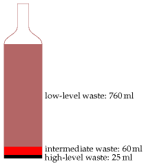
Figure 24.13. British nuclear waste, per person, per year, has a volume just a little larger than one wine bottle.
Is this a difficult problem? 1000 years is certainly a long time compared with the lifetimes of governments and countries! But the volumes are so small, I feel nuclear waste is only a minor worry, compared with all the other forms of waste we are inflicting on future generations. At 25 ml per year, a lifetime’s worth of high-level nuclear waste would amount to less than 2 litres. Even when we multiply by 60 million people, the lifetime volume of nuclear waste doesn’t sound unmanageable: 105 000 cubic metres. That’s the same volume as 35 olympic swimming pools. If this waste were put in a layer one metre deep, it would occupy just one tenth of a square kilometre.
There are already plenty of places that are off-limits to humans. I may not trespass in your garden. Nor should you in mine. We are neither of us welcome in Balmoral. “Keep out” signs are everywhere. Downing Street, Heathrow airport, military facilities, disused mines – they’re all off limits. Is it impossible to imagine making another one-square-kilometre spot – perhaps deep underground – off limits for 1000 years?
Compare this 25 ml per year per person of high-level nuclear waste with the other traditional forms of waste we currently dump: municipal waste – 517 kg per year per person; hazardous waste – 83 kg per year per person.
People sometimes compare possible new nuclear waste with the nuclear waste we already have to deal with, thanks to our existing old reactors. Here are the numbers for the UK. The projected volume of “higher activity wastes” up to 2120, following decommissioning of existing nuclear facilities, is 478 000 m3. Of this volume, 2% (about 10 000 m3) will be the high level waste (1290 m3) and spent fuel (8150 m3) that together contain 92% of the activity. Building 10 new nuclear reactors (10 GW) would add another 31 900 m3 of spent fuel to this total. That’s the same volume as ten swimming pools.
If we got lots and lots of power from nuclear fission or fusion, wouldn’t this contribute to global warming, because of all the extra energy being released into the environment?
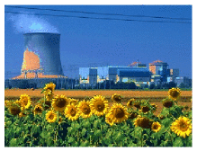
That’s a fun question. And because we’ve carefully expressed everything in this book in a single set of units, it’s quite easy to answer. First, let’s recap the key numbers about global energy balance from chapter 1: the average solar power absorbed by atmosphere, land, and oceans is 238 W/m2; doubling the atmospheric CO2 concentration would effectively increase the net heating by 4 W/m2. This 1.7% increase in heating is believed to be bad news for climate. Variations in solar power during the 11-year solar cycle have a range of 0.25 W/m2. So now let’s assume that in 100 years or so, the world population is 10 billion, and everyone is living at a European standard of living, using 125 kWh per day derived from fossil sources, from nuclear power, or from mined geothermal power. The area of the earth per person would be 51 000 m2. Dividing the power per person by the area per person, we find that the extra power contributed by human energy use would be 0.1 W/m2. That’s one fortieth of the 4 W/m2 that we’re currently fretting about, and a little smaller than the 0.25 W/m2 effect of solar variations. So yes, under these assumptions, human power production would just show up as a contributor to global climate change.
I heard that nuclear power can’t be built at a sufficient rate to make a useful contribution.
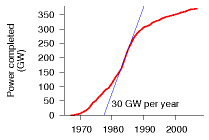
Figure 24.14. Graph of the total nuclear power in the world that was built since 1967 and that is still operational today. The world construction rate peaked at 30 GW of nuclear power per year in 1984.
The difficulty of building nuclear power fast has been exaggerated with the help of a misleading presentation technique I call “the magic playing field.” In this technique, two things appear to be compared, but the basis of the comparison is switched halfway through. The Guardian’s environment editor, summarizing a report from the Oxford Research Group, wrote “For nuclear power to make any significant contribution to a reduction in global carbon emissions in the next two generations, the industry would have to construct nearly 3000 new reactors – or about one a week for 60 years. A civil nuclear construction and supply programme on this scale is a pipe dream, and completely unfeasible. The highest historic rate is 3.4 new reactors a year.” 3000 sounds much bigger than 3.4, doesn’t it! In this application of the “magic playing field” technique, there is a switch not only of timescale but also of region. While the first figure (3000 new reactors over 60 years) is the number required for the whole planet, the second figure (3.4 new reactors per year) is the maximum rate of building by a single country (France)!
A more honest presentation would have kept the comparison on a per-planet basis. France has 59 of the world’s 429 operating nuclear reactors, so it’s plausible that the highest rate of reactor building for the whole planet was something like ten times France’s, that is, 34 new reactors per year. And the required rate (3000 new reactors over 60 years) is 50 new reactors per year. So the assertion that “civil nuclear construction on this scale is a pipe dream, and completely unfeasible” is poppycock. Yes, it’s a big construction rate, but it’s in the same ballpark as historical construction rates.
How reasonable is my assertion that the world’s maximum historical construction rate must have been about 34 new nuclear reactors per year? Let’s look at the data. Figure 24.14 shows the power of the world’s nuclear fleet as a function of time, showing only the power stations still operational in 2007. The rate of new build was biggest in 1984, and had a value of (drum-roll please…) about 30 GW per year – about 30 1-GW reactors. So there!
What about nuclear fusion?
We say that we will put the sun into a box. The idea is pretty. The problem is, we don’t know how to make the box.
S´ebastien Balibar, Director of Research, CNRS
(Figure omitted from this edition: third-party rights.)
Figure 24.15. The inside of an experimental fusion reactor. Split image showing the JET vacuum vessel with a superimposed image of a JET plasma, taken with an ordinary TV camera. Photo: EFDA-JET.
(Figure omitted from this edition: third-party rights.)
Figure 24.16. Lithium-based fusion, if used fairly and “sustainably,” could match our current levels of consumption. Mined lithium would deliver 10 kWh/d per person for 1000 years; lithium extracted from seawater could deliver 105 kWh/d per person for over a million years.
Fusion power is speculative and experimental. I think it is reckless to assume that the fusion problem will be cracked, but I’m happy to estimate how much power fusion could deliver, if the problem is cracked.
The two fusion reactions that are considered the most promising are:
the DT reaction, which fuses deuterium with tritium, making helium; and
the DD reaction, which fuses deuterium with deuterium.
Deuterium, a naturally occurring heavy isotope of hydrogen, can be obtained from seawater; tritium, a heavier isotope of hydrogen, isn’t found in large quantities naturally (because it has a half-life of only 12 years) but it can be manufactured from lithium.
ITER is an international project to figure out how to make a steadily working fusion reactor. The ITER prototype will use the DT reaction. DT is preferred over DD, because the DT reaction yields more energy and because it requires a temperature of “only” 100 million °C to get it going, whereas the DD reaction requires 300 million °C. (The maximum temperature in the sun is 15 million °C.)
Let’s fantasize, and assume that the ITER project is successful. What sustainable power could fusion then deliver? Power stations using the DT reaction, fuelled by lithium, will run out of juice when the lithium runs out. Before that time, hopefully the second installment of the fantasy will have arrived: fusion reactors using deuterium alone.
I’ll call these two fantasy energy sources “lithium fusion” and “deuterium fusion,” naming them after the principal fuel we’d worry about in each case. Let’s now estimate how much energy each of these sources could deliver.
Lithium fusion
World lithium reserves are estimated to be 9.5 million tons in ore deposits. 25 If all these reserves were devoted to fusion over 1000 years, the power delivered would be 10 kWh/d per person.
There’s another source for lithium: seawater, where lithium has a concentration of 0.17 ppm. 26 To produce lithium at a rate of 100 million kg per year from seawater is estimated to have an energy requirement of 2.5 kWh(e) per gram of lithium. If the fusion reactors give back 2300 kWh(e) per gram of lithium, the power thus delivered would be 105 kWh/d per person (assuming 6 billion people). At this rate, the lithium in the oceans would last more than a million years. 27
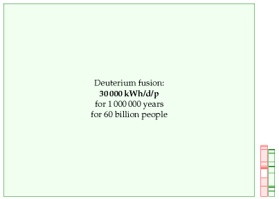
Figure 24.17. Deuterium-based fusion, if it is achievable, offers plentiful sustainable energy for millions of years. This diagram’s scale is shrunk ten-fold in each dimension so as to fit fusion’s potential contribution on the page. The red and green stacks from figure 18.1 are shown to the same scale, for comparison.
Deuterium fusion
If we imagine that scientists and engineers crack the problem of getting the DD reaction going, we have some very good news. There’s 33 g of deuterium in every ton of water, and the energy that would be released from fusing just one gram of deuterium is a mind-boggling 100 000 kWh. Bearing in mind that the mass of the oceans is 230 million tons per person, we can deduce that there’s enough deuterium to supply every person in a ten-fold increased world population with a power of 30 000 kWh per day (that’s more than 100 times the average American consumption) for 1 million years (figure 24.17).
What eighteen years actually did to nuclear power
A section added in the 2026 revision. This chapter asks a resource question — could humanity live for generations on fission? — and answers it carefully with geology and arithmetic. That answer has not changed, because it depends on how much uranium there is and how much energy a kilogram of it contains, and neither is subject to revision by events. Everything else in the subject has changed, and none of it is about resources.
Nuclear did not shrink. It was outgrown
In 2025 the world’s reactors produced about 2810 to 2845 TWh, an all-time record — the range being a genuine disagreement between compilers — up around 1.3% on the year. In the same year nuclear’s share of world electricity fell to 8.9%, its lowest since the early 1980s.28
Both statements are true and the second is the one that matters. Nuclear output has been roughly flat-to-rising for two decades while electricity demand has grown much faster, so a constant absolute contribution becomes a shrinking share. This is the same arithmetic that chapter 18 applies to Britain’s renewables from the other direction, and it is worth stating plainly: a technology can be doing fine and losing at the same time.
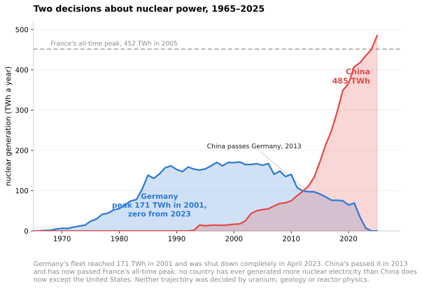
Figure 24.17b. Two decisions about nuclear power. Added in the 2026 revision. Germany’s fleet reached 171 TWh in 2001 and was shut down completely in April 2023; China’s passed it in 2013 and has now passed France’s all-time peak. Neither trajectory was decided by uranium, geology or reactor physics.29
The Western build record is the story
| Original estimate | Outturn or latest | Build time | |
|---|---|---|---|
| Olkiluoto 3, Finland | €3.2bn | €11bn | 4 years → 18 |
| Flamanville 3, France | €3.3bn | €23.7bn | 5 years → 17 |
| Hinkley Point C, UK | £18bn | £46–49bn+ | to 2017 → 2030–31 |
These are the same reactor. All three are EPRs, designed by the same company. Divide each outturn above by its capacity and the cost per megawatt runs about €6.9m at Olkiluoto (1600 MW), €14.4m at Flamanville (1650 MW) and roughly €16m at Hinkley Point C (3260 MW) — so the third build of a design costs well over twice what the first did.30
That is not a learning curve. It is a learning curve running backwards, and it is the exact inverse of the solar story in chapter 6, where each doubling of cumulative production took about 20% off the price. The section “Fabricated, not constructed” in chapter 20 explains why, and nuclear is its clearest case: an EPR is constructed on site, one at a time, by a supply chain assembled for that project and dispersed afterwards. Nothing about the physics prevents serial production. The industry simply has not done it in the West for forty years, and the skill of building these machines is not retained between attempts.
Meanwhile, elsewhere, it plainly is. As of early 2026 China operates 58 reactors, about 56 GW, with 33 more under construction; of roughly 70 reactors being built worldwide in 15 countries, almost all are in Asia. Chinese units come in around five to six years at a fraction of Western capital cost, against an American overnight cost the EIA puts near $7800–8100 per kilowatt, about £6100–6400. The difference is not a different physics or a materially different reactor. It is a standing workforce, repeated builds of the same design, and a regulator that does not reopen the design each time.31
A 2025 study in Nature assembles the construction costs of essentially every reactor ever built, in dollars per watt at constant prices, plotted against the date each entered service. The shape is the argument of this section drawn once: American costs begin near $1–2 per watt in the early 1970s and scatter up to $6–15 by the late 1980s; French costs stay near $1–2 through the 1990s and then jump to about $9 for Flamanville; South Korea holds around $2–3; and China’s cluster sits near $2 and is flat, with no upward drift across thirty units. The paper’s title asks whether China can break nuclear’s “cost curse”. The data say that China is the only builder that never caught it.32
Small modular reactors are that argument, and they are untested
The entire case for SMRs is chapter 20’s fabricated-versus-constructed argument applied to nuclear: move the work from the site into a factory, build the same thing many times, and let serial production do what it did for photovoltaics.
The argument is sound. It is also, as of 2026, unproven, because no SMR has been produced serially anywhere. The one Western project that got as far as firm customers cancelled: NuScale’s scheme with a Utah municipal consortium was abandoned in 2023 when the estimated cost rose and subscribers withdrew — the first SMR to be killed by its own price rather than by politics. Britain ran a two-year competition and selected Rolls-Royce SMR in 2025, with up to three units at Wylfa and a £2.5 billion commitment; its design assessment completes in 2026, first concrete is hoped for 2027 and first power around 2031.
So the honest position is that the most promising idea in nuclear economics has not yet been tested by the only test that matters, which is building the tenth one.
Fusion: the schedule slipped again, and the money arrived
This chapter’s fusion section is sceptical and its scepticism has held. ITER’s 2024 rebaseline moved the start of research to 2034 and operation on deuterium–tritium fuel to 2039 — four years later than the previous plan and about a decade later than the schedule current when this book was written.33
Two things did happen. In December 2022 the National Ignition Facility achieved ignition: for the first time a fusion target released more energy than the laser light delivered to it. That is a genuine scientific first and it is not an energy source — the laser system draws vastly more from the wall than the target gives back, and the facility fires a few times a day rather than ten times a second. And private money arrived: more than $7 billion across some 45 companies. Whether capital changes a schedule that has resisted it for seventy years is the open question, and this edition does not pretend to know.
Safety, and the accident that happened after this book
MacKay wrote before Fukushima Daiichi, in March 2011, and the numbers deserve stating precisely because almost nobody states them precisely. The earthquake and tsunami killed about 18 000 people. Radiation released by the reactor accident has been linked to one confirmed death, a worker whose lung cancer was officially recognised in 2018. The evacuation itself is estimated to have caused over 2000 deaths, mostly among elderly people moved from hospitals and care homes.34
That distribution — a catastrophic natural disaster, a reactor accident that killed almost nobody by radiation, and a response that killed thousands — is the whole difficulty of this subject in one event. Germany completed its nuclear exit in April 2023 largely in consequence of it, and chapter 25 records what that did to German emissions. On deaths per unit of energy delivered, nuclear sits with wind and solar and orders of magnitude below coal, and it has sat there throughout.
The problem this chapter’s framework cannot see
MacKay’s question is whether the uranium lasts. The question that now decides whether reactors get built is different, and chapter 28a is about it.
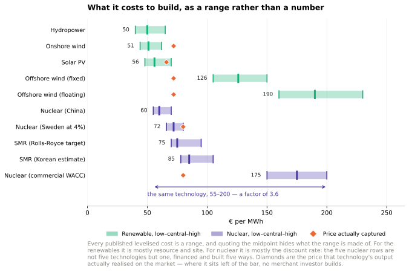
Figure 24.18. What it costs to build, as a range rather than a number. Added in the 2026 revision. Every published levelised cost is a range; for the renewables the range is mostly resource and site, and for nuclear it is mostly the discount rate. For what each technology’s output actually earned against what it cost, see figure 28a.4.35
Nuclear’s cost is almost entirely capital, which means its levelised cost is almost entirely a statement about the discount rate. Swedish figures make this vivid: the same reactor costs about €150–200 per MWh (£130–170) at commercial financing and about €72 (£62) at a 4% state rate. The €60-to-€200 range quoted for nuclear across the literature is not a range of reactor technologies. It is a range of financing conditions.
And on the revenue side, nuclear has the opposite problem to wind and solar. It runs flat, so it cannot avoid the hours when prices are low — as variable renewables grow and the average price falls, nuclear’s capture price falls with it, while wind and solar at least share the specific hours they cannibalise. In the Swedish price area SE3, nuclear captures around €80/MWh, about £69 against a commercial levelised cost twice that. No merchant investor builds on those numbers.36
Which is why every Western nuclear project now arrives with a financing instrument attached — Hinkley’s contract for difference, the regulated asset base model for Sizewell C, Swedish state loans and two-way contracts for difference. Chapter M’s point applies with unusual force here: a levelised cost computed at a common discount rate over a horizon set by the shortest-lived asset in the comparison is not a neutral measurement of a technology that lasts sixty to eighty years. American reactors are now being licensed to 80 years. An LCOE that stops at 25 or 40 charges the full capital against a fraction of the output.
So the answer to this chapter’s title has become two answers. Can we? Yes — the arithmetic above still holds, and it was never the obstacle. Will we? That depends on whether anyone learns to build the same reactor twice, and on who carries the cost of capital for a machine that pays back over eighty years. Neither is a question about uranium.
Notes and further reading
[yju4a4] omits the figure for Turkey, which is found here: [yeyr7z].
Further reading about fission: Hodgson (1999), Nuttall (2004), Rogner (2000), Williams (2000). Uranium Information Center – www.uic.com.au. www.world-nuclear.org, [wnchw]. On costs: Zaleski (2005). On waste repositories: [shrln]. On breeder reactors and thorium: www.energyfromthorium.com.
Further reading about fusion: www.fusion.org.uk, www.askmar.com/Fusion.html.
Figure 24.1. Source: World Nuclear Association [5qntkb]. The total capacity of operable nuclear reactors is 372 GW(e), using 65 000 tons of uranium per year. The USA has 99 GW, France 63.5 GW, Japan 47.6 GW, Russia 22 GW, Germany 20 GW, South Korea 17.5 GW, Ukraine 13 GW, Canada 12.6 GW, and UK 11 GW. In 2007 all the world’s reactors generated 2608 TWh of electricity, which is an average of 300 GW, or 1.2 kWh per day per person.↩︎
The 2026 column is from the OECD Nuclear Energy Agency and IAEA’s Uranium 2024: Resources, Production and Demand — the thirtieth edition of the “Red Book” — reporting identified recoverable resources at under $130/kgU as of 1 January 2023, with a world total of 5 925 700 tonnes; country figures via the World Nuclear Association’s tabulation of the same source. That total was itself down about 3% on the 2021 edition, so the rise since 2008 is not monotonic. Total identified resources across the whole cost range up to $260/kgU are 7 934 500 tonnes. MacKay’s column is his Table 24.2, on the same $130/kg basis as of 1 January 2005. Two cautions about comparing the columns. Costs are in nominal dollars in both cases, so a constant $130 threshold is a falling real threshold and the later column is, if anything, conservative. And the American collapse from 0.34 to 0.07 million tonnes reflects reporting practice rather than depletion — the United States has not submitted full resource estimates to recent editions — so the world total is understated by an unknown amount for that reason too. The Red Book itself concludes that identified resources are sufficient for both low- and high-growth nuclear scenarios through 2050 and beyond, while warning that development investment is needed to convert resources into production; the World Nuclear Association puts 5.9 million tonnes at roughly 90 years of supply at present consumption in conventional reactors, which is the once-through case MacKay computes separately.↩︎
The sensitivity is computed as follows. A 1 GWe light-water reactor consumes about 180 tonnes of uranium a year (Dungan et al.; MacKay’s own figure in this chapter is 162 t per GW-year, which would make these numbers about 10% lower). At 90% availability it generates 1e6 kW x 8760 h x 0.90 = 7.884e9 kWh, or 7.884 million MWh, so 180 000 kg at $P per kg works out at 180 000P/7.884e6 = 0.0228P dollars per MWh. The spot price of about $225/kgU is derived from $86.63 per pound of U3O8 on 3 August 2026: a pound is 0.4536 kg, and U3O8 is 84.8% uranium by mass. These are raw uranium costs only — conversion, enrichment and fabrication roughly double to triple the delivered fuel cost, and waste management and decommissioning are additional — but those stages do not scale with the uranium price, so the incremental effect of moving to a dearer source is as shown. The comparison with the discount rate uses figure 24.18’s own range and treats dollars and euros as roughly interchangeable at 2026 rates, which is adequate for a claim about a factor of five.↩︎
K. Dungan, G. Butler, F.R. Livens and L.M. Warren, “Uranium from seawater — Infinite resource or improbable aspiration?”, Progress in Nuclear Energy 99 (2017) 81–85, https://doi.org/10.1016/j.pnucene.2017.04.016. Source of the 180 t per GW-year consumption figure, the amidoxime braid description, the finding by Schneider and Sachde that mooring and collection plus adsorbent production account for 88% of cost, the Japan Atomic Energy Agency deployment proposal of 1031 square kilometres and over 100 million kg of adsorber (Tamada et al.), and the discussion of the United Nations Convention on the Law of the Sea. It is a review rather than an experimental result, and its own conclusion is cautious: a commercial seawater supply is “becoming a more realistic target” but the technology “still needs extensive development”. Published extraction cost estimates have fallen substantially since the early work — figures above $1000/kgU were common a decade ago, and later estimates from the Oak Ridge and Pacific Northwest national laboratories are several hundred — but no estimate rests on operation at anything like the required scale, so the range quoted above should be read as the span of the literature rather than as a cost.↩︎
Baseline field performance is from the Oak Ridge and Pacific Northwest national laboratories’ joint programme: braided amidoxime adsorbents in 5–10 g samples exposed to natural flowing seawater at PNNL’s Marine Sciences Laboratory, exceeding 3 g of uranium per kilogram of adsorbent over 56 days. Reuse data are from the same programme — potassium bicarbonate elution recovers close to 100% of capacity on the first reuse, falling to about 28% by the fourth, with infrared spectroscopy showing amidoxime groups converting to carboxylates during exposure. The comparison figures are: 12.6 mg/g over 24 days in natural seawater for a self-standing porous aromatic framework electrode (ACS Central Science, 2023); 6.35 mg/g in 24 hours for an amidoxime-functionalised indium–nitrogen–carbon electrocatalyst; 23.7 mg/g in seven days from natural seawater for a hydroxy-rich covalent organic framework; and 34.5 mg/g over 42 days under irradiation for triazine-linked covalent organic framework nanowires. The half-wave rectified alternating-current method that opened the electrochemical line is Liu et al., Nature Energy 2 (2017) 17007.
Three cautions on reading that table. The baseline row is the only one measured at sea, at gram scale, in flowing water, with biofouling; every other row is a laboratory result on milligram quantities in a tank, and the history of this field is that bench capacities do not survive the move. Many headline figures in the literature are measured in spiked seawater at concentrations a thousand times natural, and are not comparable at all — only figures explicitly reported for natural seawater are quoted here. And capacity per gram is the wrong figure of merit for an economic comparison; capacity per gram per deployment cycle, multiplied by the number of cycles the material survives, is the one that enters the cost, and it is almost never reported.↩︎
Fast breeder reactors obtain 60 times as much energy from the uranium. Source: www.world-nuclear.org/info/inf98. html. Japan currently leads the development of fast breeder reactors.↩︎
A once-through one-gigawatt nuclear power station uses 162 tons per year of uranium. Source: www.world-nuclear.org/info/inf03.html. A 1 GW(e) station with a thermal efficiency of 33% running at a load factor of 83% has the following upstream footprint: mining – 16 600 tons of 1%-uranium ore; milling – 191 t of uranium oxide (containing 162 t of natural uranium); enrichment and fuel fabrication – 22.4 t of uranium oxide (containing 20 t of enriched uranium). The enrichment requires 115 000 SWU; see p102 for the energy cost of SWU (separative work units).↩︎
it’s been estimated that the low-grade uranium resource is more than 1000 times greater than the 22 million tons we just assumed. Deffeyes and MacGregor (1980) estimate that the resource of uranium in concentrations of 30 ppm or more is 3×1010 tons. (The average ore grade processed in South Africa in 1985 and 1990 was 150 ppm. Phosphates typically average 100 ppm.) Here’s what the World Nuclear Association said on the topic of uranium reserves in June 2008: “From time to time concerns are raised that the known resources might be insufficient when judged as a multiple of present rate of use. But this is the Limits to Growth fallacy, … which takes no account of the very limited nature of the knowledge we have at any time of what is actually in the Earth’s crust. Our knowledge of geology is such that we can be confident that identified resources of metal minerals are a small fraction of what is there.”Measured resources of uranium, the amount known to be economically recoverable from orebodies, are … dependent on the intensity of past exploration effort, and are basically a statement about what is known rather than what is there in the Earth’s crust. “The world’s present measured resources of uranium (5.5 Mt) … are enough to last for over 80 years. This represents a higher level of assured resources than is normal for most minerals. Further exploration and higher prices will certainly, on the basis of present geological knowledge, yield further resources as present ones are used up.” “Economically rational players will only invest in finding these new reserves when they are most confident of gaining a return from them, which usually requires positive price messages caused by undersupply trends. If the economic system is working correctly and maximizing capital efficiency, there should never be more than a few decades of any resource commodity in reserves at any point in time.” [Exploration has a cost; exploring for uranium, for example, has had a cost of $1–$1.50 per kg of uranium ($3.4/MJ), which is 2% of the spot price of $78/kgU; in contrast, the finding costs of crude oil have averaged around $6/barrel ($1050/MJ) (12% of the spot price) over at least the past three decades.] “Unlike the metals which have been in demand for centuries, society has barely begun to utilize uranium. There has been only one cycle of exploration-discovery-production, driven in large part by late 1970s price peaks.”It is premature to speak about long-term uranium scarcity when the entire nuclear industry is so young that only one cycle of resource replenishment has been required.” www.world-nuclear.org/info/inf75.html Further reading: Herring (2004); Price and Blaise (2002); Cohen (1983). The IPCC, citing the OECD, project that at the 2004 utilization levels, the uranium in conventional resources and phosphates would last 670 years in once-through reactors, 20 000 years in fast reactors with plutonium recycling, and 160 000 years in fast reactors recycling uranium and all actinides (Sims et al., 2007).↩︎
Japanese researchers have found a technique for extracting uranium from seawater. The price estimate of $100 per kg is from Seko et al. (2003) and [y3wnzr]; the estimate of $300 per kg is from OECD Nuclear Energy Agency (2006, p130). The uranium extraction technique involves dunking tissue in the ocean for a couple of months; the tissue is made of polymer fibres that are rendered sticky by irradiating them before they are dunked; the sticky fibres collect uranium to the tune of 2 g of uranium per kilogram of fibre.↩︎
The expense of uranium extraction could be reduced by combining it with another use of seawater – for example, power-station cooling. The idea of a nuclear-powered island producing hydrogen was floated by C. Marchetti. Breeder reactors would be cooled by seawater and would extract uranium from the cooling water at a rate of 600 t uranium per 500 000 Mt of seawater.↩︎
World thorium resources in monazite. source: US Geological Survey, Mineral Commodity Summaries, January 1999. [yl7tkm] Quoted in UIC Nuclear Issues Briefing Paper #67 November 2004. “Other ore minerals with higher thorium contents, such as thorite, would be more likely sources if demand significantly increased.”↩︎
Thorium reactors deliver 3.6×109 kWh of heat per ton of thorium. Source: www.world-nuclear.org/info/inf62.html. There remains scope for advancement in thorium reactors, so this figure could be bumped up in the future.↩︎
An alternative nuclear reactor for thorium, the “energy amplifier”… See Rubbia et al. (1995), web.ift.uib.no/~lillestol/Energy_Web/EA.html, [32t5zt], [2qr3yr], [ynk54y].↩︎
The nuclear decommissioning authority has an annual budget of £2 billion. In fact, this clean-up budget seems to rise and rise. The latest figure for the total cost of decommissioning is £73 billion. news.bbc.co.uk/1/hi/uk/7215688.stm↩︎
The nuclear industry sold everyone in the UK 4 kWh/d for about 25 years. The total generated to 2006 was about 2200 TWh. Source: Stephen Salter’s Energy Review for the Scottish National Party.↩︎
The criticism of the Chief Inspector of Nuclear Installations was withering… (Weightman, 2007).↩︎
Figure 24.11b is generated by the
deathRatesstep of this edition’s data-refresh script andfigures/death_rates.py. Values are Our World in Data’s compilation: fossil fuels and biomass from Anil Markandya and Paul Wilkinson, “Electricity generation and health”, The Lancet 370 (2007), which counts deaths from air pollution as well as accidents; hydropower, wind, solar and nuclear from Benjamin Sovacool and colleagues (2016), which counts accident deaths from historical records. Conversion to MacKay’s unit uses 1 GW-year = 8.76 TWh. Three cautions. The two halves of the comparison are not on the same basis — the fossil rows include air pollution and the low-carbon rows do not — and correcting that would widen the gap rather than narrow it, since the low-carbon sources emit almost nothing to attribute. Our World in Data has published slightly different values for the three smallest entries across revisions, with nuclear between 0.03 and 0.07 and solar between 0.02 and 0.04; nothing in the ordering or the conclusion depends on which is used. And the nuclear figure is sensitive to how Chernobyl deaths are attributed, where estimates in the literature range over more than an order of magnitude; even the highest published attribution leaves nuclear below natural gas.↩︎Hannah Ritchie, “What was the death toll from Chernobyl and Fukushima?”, Our World in Data, https://ourworldindata.org/what-was-the-death-toll-from-chernobyl-and-fukushima, which compiles the UNSCEAR and World Health Organization assessments. Chernobyl: 2 killed in the explosion, 28 dying of acute radiation syndrome within weeks, and 15 confirmed deaths by 2005 among the thyroid cancer cases; a further 19 acute-syndrome survivors had died by 2006, mostly of causes not attributed to radiation. Estimates of eventual thyroid-cancer deaths run to a few hundred, and the article’s own best approximation for the total is 300–500. Higher figures circulate, including some in the tens of thousands; they come from applying a linear no-threshold dose model across very large populations receiving very small doses, a method whose validity at those doses is disputed and which produces numbers that cannot be tested epidemiologically. This edition quotes the confirmed toll and the article’s approximation, and notes the disagreement rather than adjudicating it. Fukushima: one worker death officially recognised as radiation-linked, against 2313 deaths attributed to the evacuation as of September 2020 — and the article’s own caution applies, that separating evacuation deaths from those caused by the earthquake and tsunami is not clean.↩︎
Nuclear power is not infinitely dangerous. It’s just dangerous. Further reading on risk: Kammen and Hassenzahl (1999).↩︎
People in America living near coal-fired power stations are exposed to higher radiation doses than those living near nuclear power plants. Source: McBride et al. (1978). Uranium and thorium have concentrations of roughly 1 ppm and 2 ppm respectively in coal. Further reading: gabe.web.psi.ch/research/ra/ra_res.html, www.physics.ohio-state.edu/~wilkins/energy/Companion/E20.12.pdf.xpdf.↩︎
Nuclear power and wind power have the lowest death rates. See also Jones (1984). These death rates are from studies that are predicting the future. We can also look in the past. In Britain, nuclear power has generated 200 GWy of electricity, and the nuclear industry has had 1 fatality, a worker who died at Chapelcross in 1978 [4f2ekz]. One death per 200 GWy is an impressively low death rate compared with the fossil fuel industry. Worldwide, the nuclear-power historical death rate is hard to estimate. The Three Mile Island meltdown killed no-one, and the associated leaks are estimated to have perhaps killed one person in the time since the accident. The accident at Chernobyl first killed 62 who died directly from exposure, and 15 local people who died later of thyroid cancer; it’s estimated that nearby, another 4000 died of cancer, and that worldwide, about 5000 people (among 7 million who were exposed to fallout) died of cancer because of Chernobyl (Williams and Baverstock, 2006); but these deaths are impossible to detect because cancers, many of them caused by natural nuclear radiation, already cause 25% of deaths in Europe. One way to estimate a global death rate from nuclear power worldwide is to divide this estimate of Chernobyl’s deathtoll (9000 deaths) by the cumulative output of nuclear power from 1969 to 1996, which was 3685 GWy. This gives a death rate of 2.4 deaths per GWy. As for deaths attributed to wind, Caithness Windfarm Information Forum www.caithnesswindfarms.co.uk list 49 fatalities worldwide from 1970 to 2007 (35 wind industry workers and 14 members of the public). In 2007, Paul Gipe listed 34 deaths total worldwide [www.wind-works.org/articles/BreathLife.html]. In the mid-1990s the mortality rate associated with wind power was 3.5 deaths per GWy. According to Paul Gipe, the worldwide mortality rate of wind power dropped to 1.3 deaths per GWy by the end of 2000. So the historical death rates of both nuclear power and wind are higher than the predicted future death rates.↩︎
Posiva received the world’s first construction licence for a spent-fuel repository in November 2015, applied for an operating licence at the end of 2021, and began the commissioning trial in 2024, encapsulating and emplacing test canisters containing non-radioactive material. Finland’s regulator STUK delayed its statement on the safety case, so the operating decision ran later than Posiva’s original plan; disposal operations are expected from 2026. See STUK’s nuclear waste management pages, https://stuk.fi/en/nuclear-waste-management, and the Finnish Ministry of Economic Affairs and Employment’s national programme, Management of spent nuclear fuel and radioactive waste in Finland. The KBS-3 method is SKB’s, developed in Sweden from the late 1970s; the Swedish government approved the Forsmark repository and the Oskarshamn encapsulation plant in January 2022, and construction began in 2025 with disposal expected in the 2030s. On the copper question: the Swedish Land and Environment Court in 2018 declined to recommend approval pending further evidence on copper corrosion in oxygen-free conditions, a dispute in which researchers at KTH and SKB reached opposite conclusions; the government approved in 2022 on SKB’s supplemented case. This edition takes no position on that dispute beyond noting that it was settled by decision rather than by demonstration, which is unavoidable given the timescales, and that it remains the most substantive open technical objection to the method.↩︎
The steel and concrete in a 1 GW nuclear power station have a carbon footprint of roughly 300 000 t CO2. A 1 GW nuclear power station contains 520 000 m3 of concrete (1.2 million tons) and 67 000 tons of steel [2k8y7o]. Assuming 240 kg CO2 per m3 of concrete [3pvf4j], the concrete’s footprint is around 100 000 t CO2. From Blue Scope Steel [4r7zpg], the footprint of steel is about 2.5 tons of CO2 per ton of steel. So the 67 000 tons of steel has a footprint of about 170 000 tons of CO2.↩︎
Nuclear waste discussion. Sources: www.world-nuclear.org/info/inf04.html, [49hcnw], [3kduo7]. New nuclear waste compared with old. Committee on Radioactive Waste Management (2006).↩︎
World lithium reserves are estimated as 9.5 million tons. The main lithium sources are found in Bolivia (56.6%), Chile (31.4%) and the USA (4.3%). www.dnpm.gov.br↩︎
There’s another source for lithium: seawater… Several extraction techniques have been investigated (Steinberg and Dang, 1975; Tsuruta, 2005; Chitrakar et al., 2001).↩︎
Fusion power from lithium reserves. The energy density of natural lithium is about 7500 kWh per gram (Ongena and Van Oost, 2006). There’s considerable variation among the estimates of how efficiently fusion reactors would turn this into electricity, ranging from 310 kWh(e)/g (Eckhartt, 1995) to 3400 kWh(e)/g of natural lithium (Steinberg and Dang, 1975). I’ve assumed 2300 kWh(e)/g, based on this widely quoted summary figure: “A 1 GW fusion plant will use about 100 kg of deuterium and 3 tons of natural lithium per year, generating about 7 billion kWh.” [69vt8r], [6oby22], [63l2lp].↩︎
World nuclear generation in 2025 is given as 2812 TWh by Ember and 2845 TWh by the Energy Institute’s Statistical Review, a difference of about 1% arising from country coverage and from how combined-heat units are treated; this edition quotes the range. The rise of about 1.3% and the share of 8.9% of world electricity — the lowest since the early 1980s — are from Ember’s Global Electricity Review and the World Nuclear Association’s performance reporting, which agree on the direction if not to the last terawatt-hour. The share figure and the record-output figure are not in tension: absolute output rose while demand rose faster.↩︎
Figure 24.17b is generated by the
nuclearHistorystep of this edition’s data-refresh script andfigures/nuclear_history.py, from the Energy Institute’s Statistical Review of World Energy 2026, sheet “Nuclear Generation - TWh”. Peaks read from that series: Germany 171.3 TWh in 2001, France 451.5 TWh in 2005, the United States 852.0 TWh in 2019, China 485.2 TWh in 2025, world 2845.4 TWh in 2025. The crossover year is computed from the two series rather than read off the chart. Germany’s last three reactors closed on 15 April 2023; the small residual in the series after that is generation earlier in that year. Note that Germany’s decision was taken in 2011 and executed over twelve years, so the decline visible from 2011 is policy rather than plant failure.↩︎Olkiluoto 3 rose from about €3.2bn to about €11bn and from a four-year to an eighteen-year build; Flamanville 3 from about €3.3bn to a widely reported €23.7bn including financing costs, over seventeen years; Hinkley Point C from an original £18bn to £46bn or more in 2015 prices, with EDF’s own statements putting it near £49bn if the first unit runs in 2030 and higher if it slips to 2031. The per-megawatt figures in the text are computed from those same outturns divided by net capacity — 1600 MW, 1650 MW and 3260 MW — and are therefore on the outturns’ own basis, which is latest reported cost including financing, in mixed price years, with Hinkley converted at roughly €1.16 to the pound. That is not a like-for-like engineering comparison: an earlier version of this section quoted a set of per-megawatt figures (£5.97m, £7.24m, £10.03m) taken from overnight construction costs in 2015 prices, which gave a much smaller ratio, and mixing the two bases is exactly the error chapter M warns about. Read the ordering, not the ratio. Cost figures for these projects are contested by the operators and the higher numbers often originate with critics of the projects; what is not contested is that all three ran several times over budget and roughly three times over schedule.↩︎
Chinese fleet figures — 58 reactors and about 56 GW operating with 33 units and over 35 GW under construction as of early 2026, against roughly 70 reactors under construction worldwide in 15 countries — are from the World Nuclear Association’s country and outlook reporting and the IAEA’s Power Reactor Information System, which differ by a unit or two depending on when a grid connection is counted. The American overnight capital cost of about $7800–8100 per kilowatt in 2024 dollars is the Energy Information Administration’s. Chinese construction costs are not published on a comparable basis; the claim that units come in at a fraction of Western capital cost rests on the Nature study cited below rather than on Chinese disclosure, and the five-to-six-year build times are from commissioning dates.↩︎
Shangwei Liu, Gang He, Minghao Qiu and Daniel M. Kammen, “Can China break the ‘cost curse’ of nuclear power?”, Nature, 2025. Overnight construction costs in 2020 dollars per watt against date of commercial operation, including retired plants; the figures quoted here are read from the published distribution rather than from a table, so they describe where the clusters sit rather than giving exact values for named units. “Overnight” means the cost if construction were instantaneous, which strips out financing — so this chart isolates the construction problem from the discount-rate problem that figure 24.18 is about. The two are separate and both matter: China is cheaper on both.↩︎
The ITER Council accepted a revised baseline in 2024 moving the start of research operations to 2034 and deuterium–tritium operation to 2039, a four-year slip attributed to the pandemic, component quality problems and optimistic first-of-a-kind planning. The National Ignition Facility first achieved target gain greater than one in December 2022 and has repeated it since; target gain is not facility gain, and the facility’s wall-plug energy per shot exceeds the yield by a large factor. Private fusion investment of more than $7bn across roughly 45 companies is the Fusion Industry Association’s own tally and counts announced raises, not deployed capital.↩︎
The Great East Japan Earthquake and tsunami of 11 March 2011 killed approximately 18 000 people. The United Nations Scientific Committee on the Effects of Atomic Radiation has consistently reported no discernible increase in radiation-related health effects in the general population; one worker death from lung cancer was officially recognised as radiation-linked by the Japanese government in 2018. Estimates of deaths caused by the evacuation itself, chiefly among elderly evacuees from hospitals and care facilities, exceed 2000 and are compiled by Japanese prefectural authorities as “disaster-related deaths”. The thyroid cancers detected by mass screening of children in Fukushima prefecture are generally attributed to the screening itself rather than to radiation, though this remains disputed. Comparative deaths-per-terawatt-hour figures depend heavily on how indirect deaths and air pollution are attributed; every published set places coal one to three orders of magnitude above nuclear.↩︎
Figure 24.18 is generated by the
nuclearCostsstep of this edition’s data-refresh script andfigures/nuclear_cost_range.py, from values assembled by hand from the sources listed in the note below — chiefly IRENA’s Renewable Power Generation Costs in 2024, the Danish Energy Agency’s technology data, the IEA and NEA’s Projected Costs of Generating Electricity 2020, and the Swedish investment analysis. The low and high bounds are indicative of the spread each source reports rather than formal confidence intervals, and the SMR rows are developer targets and third-party estimates for machines that do not yet exist, so their ranges are the least trustworthy on the chart and are almost certainly too narrow — first-of-a-kind costs have exceeded targets in every case in this chapter. An earlier version of this figure carried realised capture prices as a second series; they were Great Britain figures in pounds plotted on a euro axis beside European and global cost rows, which is precisely the boundary error chapter M is about, and they have been removed. Figure 28a.4 makes that comparison properly, on one market in one currency. The figure is drawn to make one point, which is that a single midpoint conceals what the range is made of; it is not offered as a cost database.↩︎The Swedish figures — nuclear levelised cost near €150–200/MWh at commercial financing against about €72 at a 4% state lending rate, and a realised capture price near €80/MWh in price area SE3 — are from the investment analysis at https://oluies.github.io/elmix/investering.html, which sets levelised costs against realised capture prices technology by technology and cites its own sources: the IEA and NEA’s Projected Costs of Generating Electricity 2020 for the standardised 7% and 3% real discount rates, IRENA’s Renewable Power Generation Costs in 2024, the Danish Energy Agency’s Technology Data for Generation of Electricity and District Heating, Magnus Henrekson and Christian Nilsson’s “Kärnkraftens verkliga kostnad” in Ekonomisk Debatt, ENTSO-E’s transparency platform for the hourly prices and output behind the capture figures, CSIS on Chinese nuclear costs, and Swedish law 2025:587 on state support for new nuclear investment. The 4% is the Swedish state lending rate under that law, not a market rate. The caution chapter M attaches to that comparison applies here too: a levelised cost is an asset-boundary quantity and a capture price is a system-boundary one. For nuclear the asymmetry runs the other way from wind and solar, since a flat-running plant imposes fewer balancing costs on the system and receives no credit for that in either number. United States licence renewals to 80 years have been granted to several plants, with others under review.↩︎